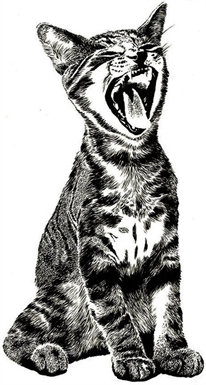

A-BANDON

"C'est dangereux d'aimer, quand chaque fois se profile le risque d'un abandon, d'une trahison. C'est violent, un amour qui se construit sur des attentes qui sont des exigences. C'est fragile une relation qui accepte de se nourrir de leurres, qui se perd entre besoins et désirs blessés." Jacques SALOME
A-BANdon
Le A :
marque l'éloignement, le détournement, la séparation, la privation.
Que dit la syllabe BAN ?
C’est la sentence qui exclut comme le bannissement ou encore la banlieue. Garder son ban ne signifie-t-il pas revenir au lieu d’où l’on a été exilé ?
Puis il y a le mot bandon qui signifie le pouvoir, la discrétion, la permission, mais aussi la liberté désordonnée, l'indiscipline, l'absence de retenue.
La définition d'abandon précise que c'est quelqu'un qui met quelque chose à la discrétion, au pouvoir de quelqu'un d'autre mais c'est également donner à quelqu'un la possibilité, la liberté, la licence, la permission de faire quelque chose.
Etonnant, non ?
En psychopathologie, il est référencé la personnalité abandonnique, l'abandonnite, le syndrome d’abandon, la névrose d’abandon, le sentiment d’abandon. Quelque soit la désignation faite, c'est avant tout un état psychologique de sentiment d’insécurité permanente lié à la peur irrationnelle d'être abandonné. Si l'abandon est mesurable il peut être vécu comme un trauma, au sens pathologique du terme, cristallisant ainsi la dimension abandonnique.
Le sentiment d’abandon se traduit par une série de manifestations physiques et psychiques pouvant aller du simple serrement de coeur à un sentiment d’injustice, d’impuissance, de l’anxiété, des toxicomanies des troubles de l'humeur, de l'automutilation jusqu'à de l’agressivité réactionnelle (mise à l’épreuve de l’autre pour s’assurer de son intérêt). Mais ce sont le renoncement à soi-même et le repli sur soi qui prédomine avant tout. Le sujet qui souffre d’un état d’abandonnisme est en demande d’affection constante pour combler un manque originel (séparation traumatisante du passé ou manque d’amour réel ou imaginaire), le positionnant dans une forme d'hypervigilance. Il ne peut désarmer. Chez lui, tout est prétexte à revendication, tout devient menace de frustration.
Le vécu abandonnique est à l’origine d’une détresse psychoaffective intense. Cela se traduit par une profonde souffrance de la pensée, une inquiétude, un mal-être et une insécurité affective lors de la rupture avec un être cher. Il se déclenche également lors de l'absence ou la disparition d'un lien affectif important pour la personne. Le vécu de délaissement peut alors se traduire par une peur de nouer des relations avec les autres ou de construire une vie de couple, par appréhension d’être rejeté. Le souffrant vit dans un état chronique d'appréhension voire de peur. Il est vulnérable aux incompréhensions et aux risques de déception qui équivalent pour lui à un manque d’amour. Il vit dans la crainte de déplaire, de décevoir, d’ennuyer, de lasser. La peur est prépondérante et va le conduire à des attitudes d’évitement, de mésentente, de séparation, rupture, isolement et étonnement de solitude. La réassurance affective devient une priorité excessive dans les relations avec les autres, ce qui peut avoir des conséquences dans la vie sociale et surtout dans la vie de couple. L’estime de soi est souvent fragile car l’abandon ressenti influence une dévalorisation et une absence de mérite de pouvoir être aimé. Le ressenti d'injustice est souvent (omni)présent.
Il peut se distinguer une dépendance affective qui s’observe souvent à travers la qualité de la relation amoureuse. Si les besoins affectifs ne sont pas satisfaits, la personne éprouve de la frustration et une souffrance sans pour autant se détacher de son partenaire. Il y a un besoin constant de se faire aimer parce qu’elle a peur que les gens la rejette. Bien souvent, le cercle amical est pour elle une bouée de sauvetage et elle s’y accroche comme si sa vie en dépendait. La personne dépendante affective, parce qu’elle ne parvient pas à aimer suffisamment par elle-même, se sent carencée et est fréquement en quête d’amour et de reconnaissance. Elle a des difficultés à s’estimer à sa juste valeur et va alors se centrer sur les autres. Ce rapport à l'autre va l'amener au ressenti régulier d'être dans l'incapacité de dire non et de poser des limites.
Si l’homme sain sait identifier ses besoins et les satisfaire, l’abandonnique, lui les ignore. Il a appris à ne plus en avoir, personne jadis ne pouvant les satisfaire, ils se sont amenuisés, puis ont disparu et ont fait émerger une insatisfaction permanente, source de la souffrance due aux carences et aux frustrations.
Le A :
marque l'éloignement, le détournement, la séparation, la privation.
Que dit la syllabe BAN ?
C’est la sentence qui exclut comme le bannissement ou encore la banlieue. Garder son ban ne signifie-t-il pas revenir au lieu d’où l’on a été exilé ?
Puis il y a le mot bandon qui signifie le pouvoir, la discrétion, la permission, mais aussi la liberté désordonnée, l'indiscipline, l'absence de retenue.
La définition d'abandon précise que c'est quelqu'un qui met quelque chose à la discrétion, au pouvoir de quelqu'un d'autre mais c'est également donner à quelqu'un la possibilité, la liberté, la licence, la permission de faire quelque chose.
Etonnant, non ?
En psychopathologie, il est référencé la personnalité abandonnique, l'abandonnite, le syndrome d’abandon, la névrose d’abandon, le sentiment d’abandon. Quelque soit la désignation faite, c'est avant tout un état psychologique de sentiment d’insécurité permanente lié à la peur irrationnelle d'être abandonné. Si l'abandon est mesurable il peut être vécu comme un trauma, au sens pathologique du terme, cristallisant ainsi la dimension abandonnique.
Le sentiment d’abandon se traduit par une série de manifestations physiques et psychiques pouvant aller du simple serrement de coeur à un sentiment d’injustice, d’impuissance, de l’anxiété, des toxicomanies des troubles de l'humeur, de l'automutilation jusqu'à de l’agressivité réactionnelle (mise à l’épreuve de l’autre pour s’assurer de son intérêt). Mais ce sont le renoncement à soi-même et le repli sur soi qui prédomine avant tout. Le sujet qui souffre d’un état d’abandonnisme est en demande d’affection constante pour combler un manque originel (séparation traumatisante du passé ou manque d’amour réel ou imaginaire), le positionnant dans une forme d'hypervigilance. Il ne peut désarmer. Chez lui, tout est prétexte à revendication, tout devient menace de frustration.
Le vécu abandonnique est à l’origine d’une détresse psychoaffective intense. Cela se traduit par une profonde souffrance de la pensée, une inquiétude, un mal-être et une insécurité affective lors de la rupture avec un être cher. Il se déclenche également lors de l'absence ou la disparition d'un lien affectif important pour la personne. Le vécu de délaissement peut alors se traduire par une peur de nouer des relations avec les autres ou de construire une vie de couple, par appréhension d’être rejeté. Le souffrant vit dans un état chronique d'appréhension voire de peur. Il est vulnérable aux incompréhensions et aux risques de déception qui équivalent pour lui à un manque d’amour. Il vit dans la crainte de déplaire, de décevoir, d’ennuyer, de lasser. La peur est prépondérante et va le conduire à des attitudes d’évitement, de mésentente, de séparation, rupture, isolement et étonnement de solitude. La réassurance affective devient une priorité excessive dans les relations avec les autres, ce qui peut avoir des conséquences dans la vie sociale et surtout dans la vie de couple. L’estime de soi est souvent fragile car l’abandon ressenti influence une dévalorisation et une absence de mérite de pouvoir être aimé. Le ressenti d'injustice est souvent (omni)présent.
Il peut se distinguer une dépendance affective qui s’observe souvent à travers la qualité de la relation amoureuse. Si les besoins affectifs ne sont pas satisfaits, la personne éprouve de la frustration et une souffrance sans pour autant se détacher de son partenaire. Il y a un besoin constant de se faire aimer parce qu’elle a peur que les gens la rejette. Bien souvent, le cercle amical est pour elle une bouée de sauvetage et elle s’y accroche comme si sa vie en dépendait. La personne dépendante affective, parce qu’elle ne parvient pas à aimer suffisamment par elle-même, se sent carencée et est fréquement en quête d’amour et de reconnaissance. Elle a des difficultés à s’estimer à sa juste valeur et va alors se centrer sur les autres. Ce rapport à l'autre va l'amener au ressenti régulier d'être dans l'incapacité de dire non et de poser des limites.
Si l’homme sain sait identifier ses besoins et les satisfaire, l’abandonnique, lui les ignore. Il a appris à ne plus en avoir, personne jadis ne pouvant les satisfaire, ils se sont amenuisés, puis ont disparu et ont fait émerger une insatisfaction permanente, source de la souffrance due aux carences et aux frustrations.

Ce vécu spécifique se traduit par plusieurs caractéristiques chez le sujet souffrant :
• le besoin de reconnaissance : la personne fait tout pour être aimée de l’autre et le séduire pour qu’il ne la rejette pas. Elle existe à travers le regard de l’autre et a besoin d’être reconnue pour exister
• la culpabilité : si elle est abandonnée, c’est de sa faute, parce qu’elle pense ne pas être assez bien pour la personne
• le rejet des autres : l’abandonnique peut devenir agressif envers les autres s’il ne se sent pas exister et aimer à leurs yeux. Ainsi, il provoque ce rejet de façon plus ou moins consciente. Il préfère rejeter, dans l'antcipation fantasmatique de pouvoir être mis en marge
• l’isolement : par peur d’être rejetée, la personne souffrant de vécu abandonnique peut se replier sur elle-même et fuir les autres afin d’éviter le rejet
• l’introspection : pour ne pas heurter les autres, l’abandonnique cache ses émotions et ses sentiments, au point d’extérioriser par des troubles psychosomatiques par exemple (douleurs chroniques ou eczéma)
• la peur de la solitude : pour ne pas ressentir l’abandon, elle préfèrera s’entourer en permanence de monde
• le sacrifice : afin de satisfaire les autres, l’abandonnique peut subir des humiliations ou des vexations de toutes sortes. Il est prêt à tout pour être aimé
Ce vécu d'exclusion engendre chez la personne qui en souffre des comportements d’auto-sabotage. Bien souvent, la personne "abandonnée" fait tout, inconsciemment, pour rejouer l’abandon qu’elle a vécu par le passé. Alors qu’elle cherche absolument à être aimée et considérée, elle mettra tout en place pour susciter le rejet ou rejeter elle-même puisque de toute façon, elle pense ne pas mériter cet amour de l’autre. se persuadant que tôt ou tard elle sera à nouveau abandonnée. Cette stratégie biaisée lui donne le sentiment de contrôler son champs émotionnel.
Pour se donner les moyens de sortir de ce cercle vicieux entre le besoin de reconnaissance et le rejet, un travail personnel permettant d’identifier ce fonctionnement et de pouvoir le contrer, est nécessaire. L’observation de ses propres relations amoureuses et amicales, jalonnées par des rejets récurrents, peut être le signe d’un vécu abandonnique. Il est à considérer :
• travailler la confiance et l’estime de soi
• apprendre à poser un regard objectif sur ses relations avec les autres
• être soi-même, et prendre le risque de décevoir
• se déculpabiliser
• s’accepter tel que l’on est
• s’affirmer
• apprendre à communiquer avec les autres
On peut considérer qu'il y a symptôme abandonnique lorsque l’abandon n’est pas achevé, ni nommé, maintenant le sujet dans une illusion fâcheuse qui l’empêche de rompre avec le rêve et d’accéder à la quiétude, à l'autonomie, à l'individualité, au bandon.
• le besoin de reconnaissance : la personne fait tout pour être aimée de l’autre et le séduire pour qu’il ne la rejette pas. Elle existe à travers le regard de l’autre et a besoin d’être reconnue pour exister
• la culpabilité : si elle est abandonnée, c’est de sa faute, parce qu’elle pense ne pas être assez bien pour la personne
• le rejet des autres : l’abandonnique peut devenir agressif envers les autres s’il ne se sent pas exister et aimer à leurs yeux. Ainsi, il provoque ce rejet de façon plus ou moins consciente. Il préfère rejeter, dans l'antcipation fantasmatique de pouvoir être mis en marge
• l’isolement : par peur d’être rejetée, la personne souffrant de vécu abandonnique peut se replier sur elle-même et fuir les autres afin d’éviter le rejet
• l’introspection : pour ne pas heurter les autres, l’abandonnique cache ses émotions et ses sentiments, au point d’extérioriser par des troubles psychosomatiques par exemple (douleurs chroniques ou eczéma)
• la peur de la solitude : pour ne pas ressentir l’abandon, elle préfèrera s’entourer en permanence de monde
• le sacrifice : afin de satisfaire les autres, l’abandonnique peut subir des humiliations ou des vexations de toutes sortes. Il est prêt à tout pour être aimé
Ce vécu d'exclusion engendre chez la personne qui en souffre des comportements d’auto-sabotage. Bien souvent, la personne "abandonnée" fait tout, inconsciemment, pour rejouer l’abandon qu’elle a vécu par le passé. Alors qu’elle cherche absolument à être aimée et considérée, elle mettra tout en place pour susciter le rejet ou rejeter elle-même puisque de toute façon, elle pense ne pas mériter cet amour de l’autre. se persuadant que tôt ou tard elle sera à nouveau abandonnée. Cette stratégie biaisée lui donne le sentiment de contrôler son champs émotionnel.
Pour se donner les moyens de sortir de ce cercle vicieux entre le besoin de reconnaissance et le rejet, un travail personnel permettant d’identifier ce fonctionnement et de pouvoir le contrer, est nécessaire. L’observation de ses propres relations amoureuses et amicales, jalonnées par des rejets récurrents, peut être le signe d’un vécu abandonnique. Il est à considérer :
• travailler la confiance et l’estime de soi
• apprendre à poser un regard objectif sur ses relations avec les autres
• être soi-même, et prendre le risque de décevoir
• se déculpabiliser
• s’accepter tel que l’on est
• s’affirmer
• apprendre à communiquer avec les autres
On peut considérer qu'il y a symptôme abandonnique lorsque l’abandon n’est pas achevé, ni nommé, maintenant le sujet dans une illusion fâcheuse qui l’empêche de rompre avec le rêve et d’accéder à la quiétude, à l'autonomie, à l'individualité, au bandon.
EN RELATION


TRAUMA
REPETITION
REPARATION
EMOTION
DUEIL
TRAHISON